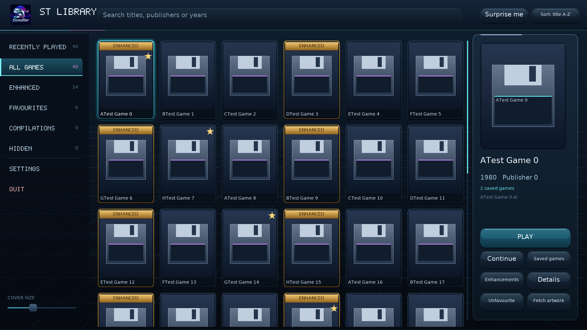
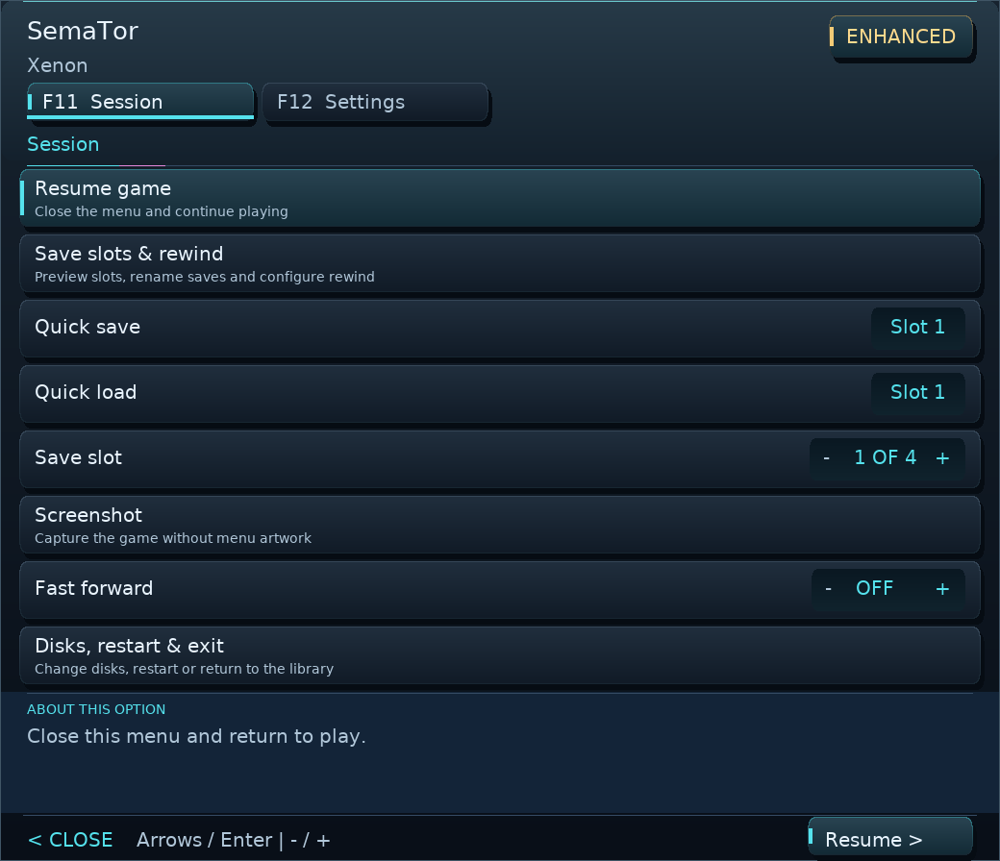
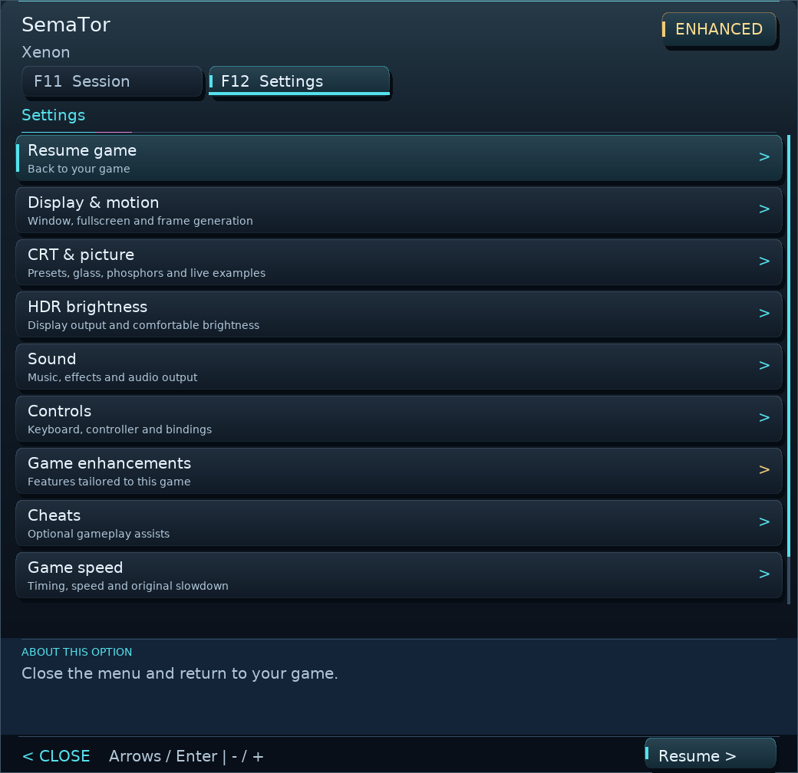
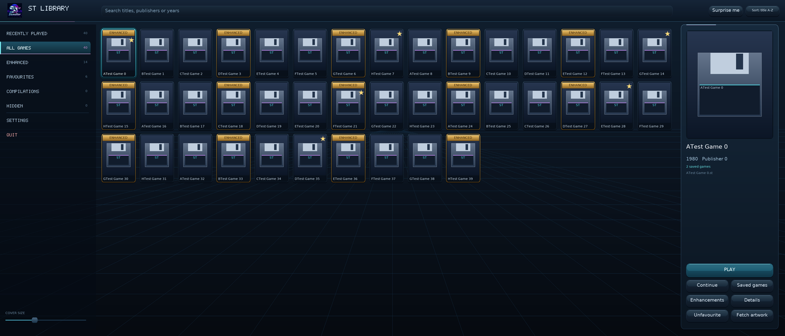

{kind=link}
The classics, with extras.
Find supported titles at a glance. Explore per-game improvements, sound options and gameplay assists. Features depend on the title and disk edition. Browse game guides and controls →
Your Atari ST games, with a modern home. Browse your own disks, shape the picture and explore enhancements built for individual games.
Created by David Baron with AI assistance in development, research, documentation and this website.
Linux & Windows · No TOS ROM required · Bring your own disks

SemaTor runs your 68000 game code and provides the ST hardware and operating-system interfaces it needs. Supported titles can go further with native enhancements.
Find supported titles at a glance. Explore per-game improvements, sound options and gameplay assists. Features depend on the title and disk edition. Browse game guides and controls →
Keep pixels crisp, choose a simple filter, or tune the CRT look with presets, phosphors and a bezel. Make the screen feel right to you.
Try optional frame generation for smoother motion, or stay with original frames. Availability and results depend on your GPU, backend and driver.
SemaTor is an Atari ST translation layer. It runs 68000 game code and provides the hardware and operating-system interfaces those games need, without requiring an Atari TOS ROM.
Supported profiles can extend the view, separate audio players, improve controls or add companion information. These changes depend on the title; they are more than a screen filter.
Bring your collection, choose the look and keep your saves and settings between releases. Enhancements are selectable, with edition-specific options explained in the game guides.
A cover library, gamepad menus, control guides, save previews, CRT picture settings and optional frame generation bring familiar games into a desktop experience.
SemaTor does not promise universal ST compatibility. Results vary by game, disk edition and hardware. Read each guide for supported options and limitations.
Choose game folders and custom covers with a file browser. Fetch artwork for a game or your whole library. Jump into a session, then keep the controls close.



Optional dither blending, gentle gradients and edge smoothing process source pictures before frame generation. Drive B holds its own disk and saves. A built-in procedural MIDI synthesizer adds another sound option, without an external sound bank. Colour reconstruction and MIDI default off.
Read the changes & testing notesChoose your desktop build. Extract the complete ZIP, add your own game disks, and make yourself at home.
Run sh install.sh from the extracted folder. The default home is ~/Games/SemaTor, with real files copied into place.
SDL2 runtime and Python 3 required. A double-click may open the script in your editor; the command above runs it.
Extract to a writable folder and launch SemaTor.exe. Keep SDL2.dll next to the application.
Built and checked automatically; broader real-machine testing is still needed. Compatibility reports welcome.
The library header always shows update status. An available update is highlighted in gold; select it to download with progress in a popup, then choose Install and restart. Library Settings → Updates can download a signed desktop update and install it on restart, preserving your games, saves, settings and custom artwork. Updating from 1.1.301 supports the signed updater. If your version is older, use the platform ZIP once because older helpers do not accept the new Dungeon Master artwork paths. Preserve Games, Media and User. No commercial game disk images or Atari TOS ROM are supplied. Compatibility varies by game and disk edition. Automated and software-renderer checks have run; physical GPU, Windows and full-campaign reports are welcome.
All releases & release notes →Phone and AYN Thor interfaces put the library and controls within reach. On a dual-screen handheld, the lower panel gives your session its own space.
Earlier development screenshots. Android and Thor are separate development builds. ARM64 test builds include mobile and dual-screen controls, but need physical-device testing. These earlier screenshots are illustrative; appearance may change.
Tell us what works, what sounds wrong, or where the picture could be better. Include your version, system, game edition and steps to reproduce. An optional local report is available in F12 → Support & diagnostics.
Please don’t attach game disks or ROMs to reports.
{kind=link}
{kind=link}
{kind=link}
{kind=link}
{kind=link}